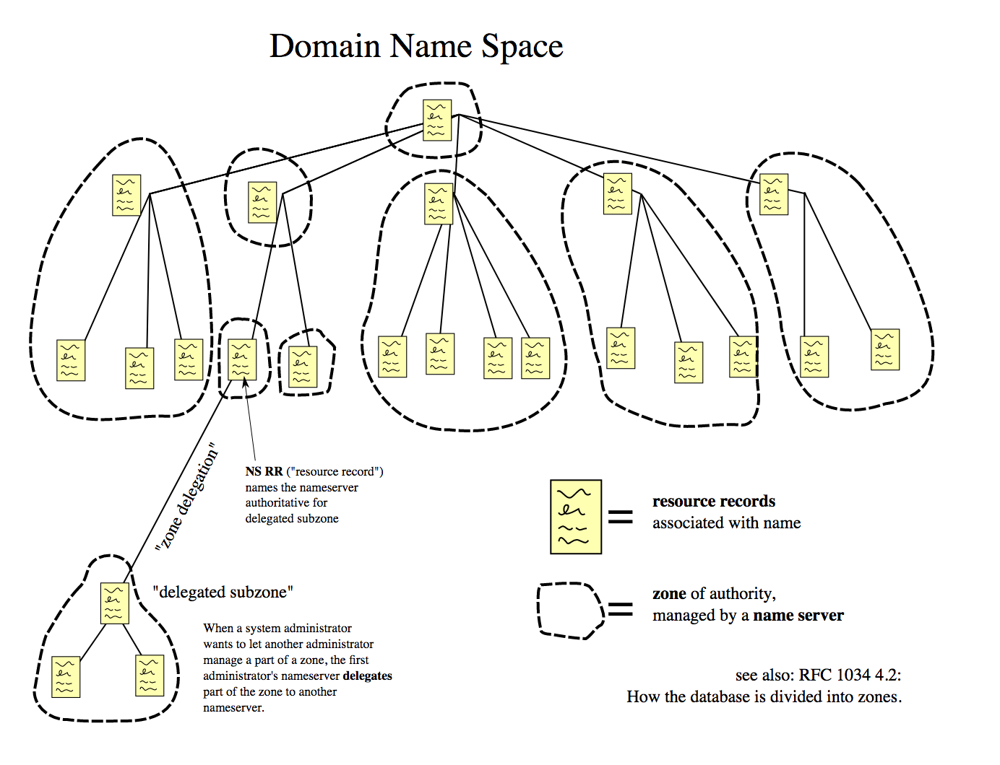

What Is DNS?
What Is DNS?

What Is DNS?
The Domain Name System (DNS) is a hierarchical and decentralized naming system for computers, services, or other resources connected to the Internet or a private network. It associates various information with domain names assigned to each of the participating entities. Most prominently, it translates more readily memorized domain names to the numerical IP addresses needed for locating and identifying computer services and devices with the underlying network protocols. By providing a worldwide, distributed directory service, the Domain Name System has been an essential component of the functionality of the Internet since 1985.
The Function Of DNS
An often-used analogy to explain the Domain Name System is that it serves as the phone book for the Internet by translating human-friendly computer hostnames into IP addresses. For example, the domain name www.example.com translates to the addresses 93.184.216.34 (IPv4) and 2606:2800:220:1:248:1893:25c8:1946 (IPv6). The DNS can be quickly and transparently updated, allowing a service's location on the network to change without affecting the end users, who continue to use the same hostname. Users take advantage of this when they use meaningful Uniform Resource Locators (URLs) and e-mail addresses without having to know how the computer actually locates the services.
An important and ubiquitous function of DNS is its central role in distributed Internet services such as cloud services and content delivery networks. When a user accesses a distributed Internet service using a URL, the domain name of the URL is translated to the IP address of a server that is proximal to the user. The key functionality of DNS exploited here is that different users can simultaneously receive different translations for the same domain name, a key point of divergence from a traditional phone-book view of the DNS. This process of using the DNS to assign proximal servers to users is key to providing faster and more reliable responses on the Internet and is widely used by most major Internet services.
The DNS reflects the structure of administrative responsibility in the Internet. Each subdomain is a zone of administrative autonomy delegated to a manager. For zones operated by a registry, administrative information is often complemented by the registry's RDAP and WHOIS services. That data can be used to gain insight on, and track responsibility for, a given host on the Internet.